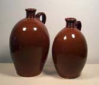

| The Poor Potter
of Yorktown, Virginia
Article courtesy the Colonial National Historical
Park - Yorktown
Many
of Yorktown's citizens were active in events leading to American
independence. Best known is Thomas Nelson, Jr., who signed the Declaration
of Independence, served as Virginia's governor in 1781 and commanded
the Virginia militia during the siege of Yorktown. Another resident,
virtually unknown, helped break Great Britain's economic hold over
the colonies. Called today the "poor potter" of Yorktown,
his pottery factory is the largest known enterprise of its type
in Colonial America. Yet more than 250 years after his death, the
poor potter remains a mystery.
For many years the only known clues to the poor potter's existence
were large deposits of pottery fragments found in Yorktown. In 1970,
however, the remains of his factory were discovered, revealing a
large-scale 18th century operation. Evidence also showed the factory
had produced quality wares equal to, and in competition with, products
made by British potters - a violation of British laws that restricted
industrial development in the colonies. How then had the factory
been able to operate?
The search for answers uncovered a 1732 report sent by Virginia's
Lieutenant Governor, William Gooch, to the Board of Trade in London.
Gooch wrote: "As to manufactures set up, there is one poor
Potter's work for course earthenware, which is of so little consequence,
that I dare say there hath not been twenty shillings worth less
of that commodity imported since it was set up than there was before."
Though Gooch obviously knew about the Yorktown factory, he had allowed
it to operate. He also gave the potter an identity - the "poor
potter".

Who was the poor potter? Research reveals he was Yorktown entrepreneur
William Rogers, who was neither poor nor a potter. Rogers had emigrated
to Yorktown around 1710 and a year later had begun his first enterprise
- a brewery. By 1720, he was producing pottery at a complex that
included two kilns and supporting work areas. A skilled work force
crafted at least 23 types of earthenware and stoneware products
including milk pans, bowls, bird bottles, mugs, colanders, porringers,
churns and chafing dishes. In addition to marketing his wares locally,
Rogers sold his goods in the Potomac River region, New England and
the West Indies. Though Rogers died in 1739, his family operated
the pottery factory for several more years.
Questions about the poor potter still persist. Why did Lieutenant
Governor Gooch allow the factory to operate? Who were the potters?
These questions may always remain open for speculation.
Visiting the Poor Potter
Though
archeologists, curators and students of ceramic manufacturing had
long suspected that a potter had been at work in Yorktown in the
18th century, the location, size and scope of the industry remained
a mystery until the last half of the 20th century. Archeological
investigations begun in 1966 indicated the general location of the
factory and in 1970 the bottom half of a well-preserved potter's
kiln was discovered under a garage on Read Street in Yorktown, pinpointing
the exact location of William Rogers' operation. Excavations continued
until the early 1980s under the direction of Dr. Norman Barka of
the College of William & Mary, adding significantly to the information
about the role William Rogers and his potters had in establishing
economic independence for the Virginia colony.
Today the remains of the pottery factory are important evidence
of the role William Rogers and his potters had in establishing economic
independence for the Virginia colony. The factory site is located
a short walk from the Yorktown Visitor Center, and one block from
the historic Nelson House.
More Articles
|